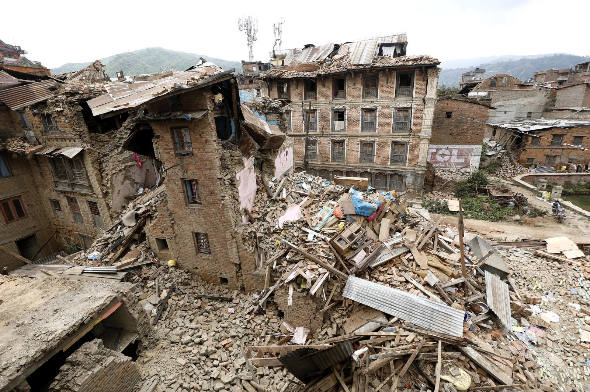

An earthquake (also known as a quake, tremor, or temblor) is the shaking of the surface of the Earth resulting from a sudden release of energy in the Earth’s lithosphere that creates seismic waves(Wikipedia). Depending on their magnitude (actually ground acceleration), they can be mild to catastrophic. Earthquakes are caused mostly by the rupture of geological faults but also by other events such as volcanic activity, landslides, mine blasts, and nuclear tests. In short, earthquake represents seismic activities either by humans or natural causes. The initial point of occurrence or rupture point is known as the hypocenter and the corresponding ground surface is known as the epicenter. Naturally, earthquakes are caused by the movement of tectonic plates which is a major source for countries like Nepal. When one plate strikes another, there is an increase in stress which is stored in the form of elastic energy. When there is sufficient energy that the plates couldn’t handle that triggers fracture that propagates resulting in the outcome of huge seismic energy.
Earthquake danger zone map (source : Earthquake danger zone map (mapsnworld.com)
Nepal lies on top of the boundary between the Indian Plate and the Eurasian plate. So it has been the victim of earthquakes for a long time. The first recorded earthquake in Nepal was in 1255 A.D and on a 7.8 Richter scale.
Here is the list of major earthquakes in Nepal.
1).1255 A.D.
The year 1255 A.D. corresponds to a historical earthquake that produced significant damage and claimed one-third of Kathmandu’s population including then king Abhaya Malla. Epicenter: Kathmandu Magnitude: greater than 7.7 Richter scale. Estimated deaths: 2200+
More at Great Nepalese quake of 1255 points to Himalayan risk (phys.org)
2). 1260 A.D.
Another big earthquake was recorded on 1260 A.D. during the reign of JayDev Malla that took many buildings and temples. Epicenter: Sagarmatha zone Magnitude:7.1 Richter Scale Estimated deaths:100+
3). 1344 A.D.
Exact number of fatalities and damage couldn’t be confirmed but the earthquake of 1344 A.D. was even bigger in magnitude than the previous ones. Epicenter: Mechi zone Magnitude: 7.9 Richter scale Estimated deaths:100+
4). 1408 A.D.
During August of year 1408, country experienced another Earthquake.Rato Machhendranath dimple was completely destroyed and again rebuilt. Epicenter: Near Nepal-Tibet Border Magnitude:8.2 Richter Scale Estimated deaths:2500+
5). 1505 A.D.
The 1505 Lo Mustang earthquake occurred on 6 June 1505 being one of the largest earthquakes in Nepalese history. Magnitude: estimated to be between 8.2 to 8.9 Richter scale Estimated deaths: about 6000
6). 1681 A.D.
During the reign King Sri Niwas Malla, another major earthquake hit Nepal and Kathmandu valley. Epicenter: Koshi zone Magnitude: :8.0 Richter Scale Estimated deaths:4500+
7). 1767 A.D.
In months of June and July another significant earthquake hit Nepal. Twenty-one shocks and aftershocks of this particular earthquake is said to have occurred in a span of twenty four hours. Epicenter: Bagmati zone Magnitude: 7.9 Richter Scale Estimated deaths:4000+
8). 1810 A.D.
Exact location was not found of this earthquake. There is no information regarding this earthquake but was assumed to be big.
9). 1823 A.D.
No report of loss of lives and property but is believed to be of less magnitude than previous ones. Epicenter: Kathmandu
10).1833 A.D. also known as Kathmandu-Bihar earthquake
During the reign King Rajendra Bikram Shah on the months of August or September, two major strikes were experienced in the Kathmandu valley. The first one was felt in around 6 pm and the second one was around 11 pm at night when most of the valley people were already in their beds. Epicenter: Kathmandu-Bihar Magnitude: 8 Richter Scale Estimated deaths:6500 +
11).1834 A.D.
About four earthquakes were experienced in interval of 2 months but there are no records of casualties and magnitude but was of less magnitude than that of 1833 A.D.
12). 1934 A.D. also known as Great Nepal Bihar Earthquake (१९९० सालको भुकम्प)
The earthquake struck around 2 pm on 16th Jan and took more lives than all the previous ones. Some publication says 15th Jan. Epicenter: Nepal, Bihar Magnitude: 8 Richter Scale (some says 8.4) Estimated deaths: Around 12000
13). 1966 A.D.
Epicenter: Doti Magnitude: 6.3 Richter Scale Estimated deaths: 80+
14).1974 A.D.
Monday, 23 December at 09:45. Epicenter Bajura Magnitude: 5.2 Richter Scale
15).1980 A.D.
Numerous buildings were destroyed in Baitadi, Bajhang, Darchula including heavy lossof livestocks. Epicenter: Pithoragarh Magnitude: 6.5 Richter Scale Estimated deaths: 200
16). 1988 A.D.
Occurred on August 21 in two waves each of 10 and 15 seconds. Epicenter: Kathmandu, Bihar Magnitude: 6.9 Richter Scale Estimated deaths: 1000+
17). 1993 A.D. ,1994 A.D, 1995 A.D.,1997 A.D.,2001 A.D.,2002 A.D. and 2003A.D.
also suffered minor earthquakes including few losses of lives. (No detail information found).
18). 2011 A.D.
Occurred on September 18. Epicenter: Sikkim Magnitude: 6.9 Richter Scale Estimated deaths: 111+
19). 2015 A.D.
Who can forget the earthquake of 2015 A.D.!!!! Destroyed numerous lives and properties including Dharahara. Epicenter: Gorkha (Barpak) Magnitude:7.8 Richter Scale Estimated deaths: 8857+
20).2015 A.D.
Epicenter: Dolakha Magnitude: 7.3 Estimated deaths : 213
These are the major earthquake recorded till date in Nepal.For other minor earthquakes you will find a detailed information in National Earthquake Monitoring & Research Center (seismonepal.gov.np).
